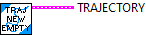
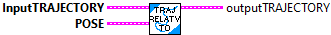
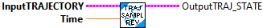
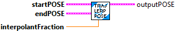

Concatenates another trajectory to the current trajectory. The user is responsible for making sure that the end pose of this trajectory and the start pose of the other trajectory match (if that is the desired behavior).
Inputs:
- Trajectory 1 -- Initial trajectory
- Trajectory 2 -- Trajectory to add to end of Trajectory 1
Outputs:
- OutTrajectory -- Concatenated trajectory

Determines if two trajectories are equal.
Parameters:
- Trajectory - Trajectory data structure
- Other Trajectory - Trajectory data structure
Returns:
- Equals - boolean indicating if the two trajectories are equal.

Gets the array of trajectory states for this trajectory
Parameters:
- Trajectory - Trajectory data structure
Returns:
- States - Array of trajectory states for this trajectory

Gets the total time in seconds for this trajectory
Parameters:
- Trajectory - Trajectory data structure
Returns:
- TotalTime_SEC - Total trajectory time in seconds.

Constructs a trajectory from a vector of states.
Represents a time-parameterized trajectory. The trajectory contains of various States that represent the pose, curvature, time elapsed, velocity, and acceleration at that point.
Parameters:
- TrajStates - A vector of states.
Returns:
- Trajectory - Trajectory data structure

Constructs an empty trajectory.
Represents a time-parameterized trajectory. The trajectory contains of various States that represent the pose, curvature, time elapsed, velocity, and acceleration at that point.
Parameters:
-
Returns:
- Trajectory - Trajectory data structure

Transforms all poses in the trajectory so that they are relative to the given pose. This is useful for converting a field-relative trajectory into a robot-relative trajectory.
Parameters:
- InputTrajectory - Trajectory data structure
- pose -The pose that is the origin of the coordinate frame that the current trajectory will be transformed into.
Returns:
- OutputTrajectory - The transformed trajectory.

Sample the trajectory at a point in time.
Parameters:
- InputTrajectory - The Trajectory data structure
- time - The point in time since the beginning of the trajectory to sample. (seconds)
Returns:
- OutputTrajState - The state at that point in time.

Sample the trajectory at a point in time. The trajectory is sampled in reverse such that the ending time becomes 0 and the beginning time is the maximum time. The selected trajectory state is then transformed to be relative to end of the trajectory.
For this subVI to work correctly, sampling must start at time 0.0.
The result is a relative trajectory which starts at 0,0,0. This assumes that the robot follows the trajectory such that the orientation of the robot equals the ending state of the trajectory.
This routine does not exist in WPILIB
Parameters:
- InputTrajectory - The Trajectory data structure
- time - The point in time since the beginning of the trajectory to sample. (seconds)
Returns:
- OutputTrajState - The state at that point in time.

Transforms all poses in the trajectory by the given transform. This is useful for converting a robot-relative trajectory into a field-relative trajectory. This works with respect to the first pose in the trajectory.
Parameters:
- InputTrajectory - Trajectory data structure
- transform - The transform to transform the trajectory by.
Returns:
- OutputTrajectory - The transformed trajectory.

This is an internal routine. Linearly interpolates between two values.
Parameters:
- startPose - The start Pose.
- endPose - The end Pose.
- fraction - The fraction for interpolation.
Return:
- outputPose - The interpolated Pose.

This is an internal routine. Linearly interpolates between two values.
Parameters:
- startValue - The start value.
- endValue - The end value.
- fraction - The fraction for interpolation.
Return:
- outputValue - The interpolated value.